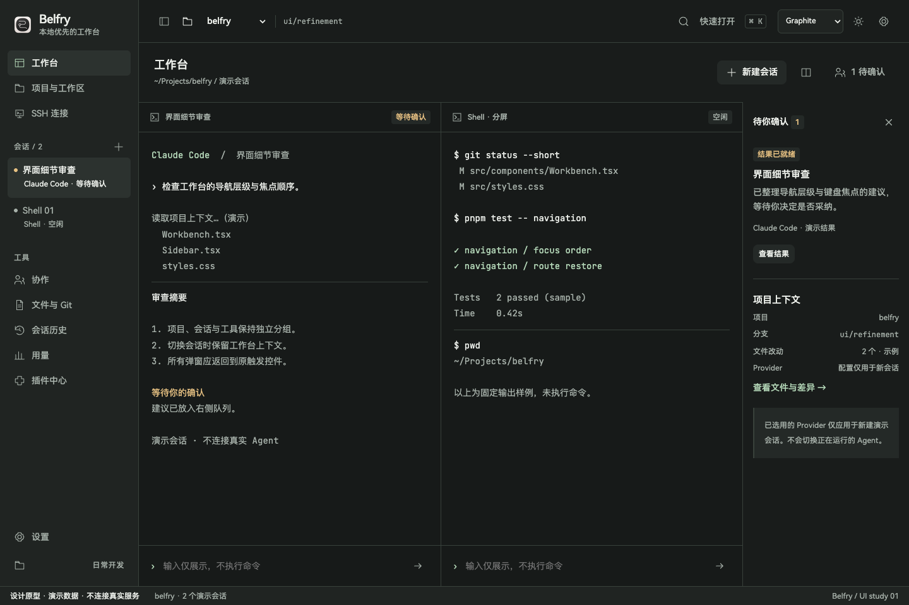
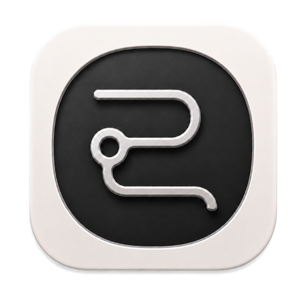

导航不抢工作内容
项目、会话、工具三段分组；待确认内容从终端输出中抽出，保留清晰返回路径。
全局一致，而非全部卡片化
8 个主页面、11 个设置子页，共用排版、表单、弹窗、焦点和状态语法。
保护已有行为
凭据动作、敏感预览确认、未保存提示可体验。此处不启动终端、不改真实配置。

终端优先 / 安静的轨道 / 明确的状态

项目、会话、工具三段分组；待确认内容从终端输出中抽出，保留清晰返回路径。
8 个主页面、11 个设置子页，共用排版、表单、弹窗、焦点和状态语法。
凭据动作、敏感预览确认、未保存提示可体验。此处不启动终端、不改真实配置。